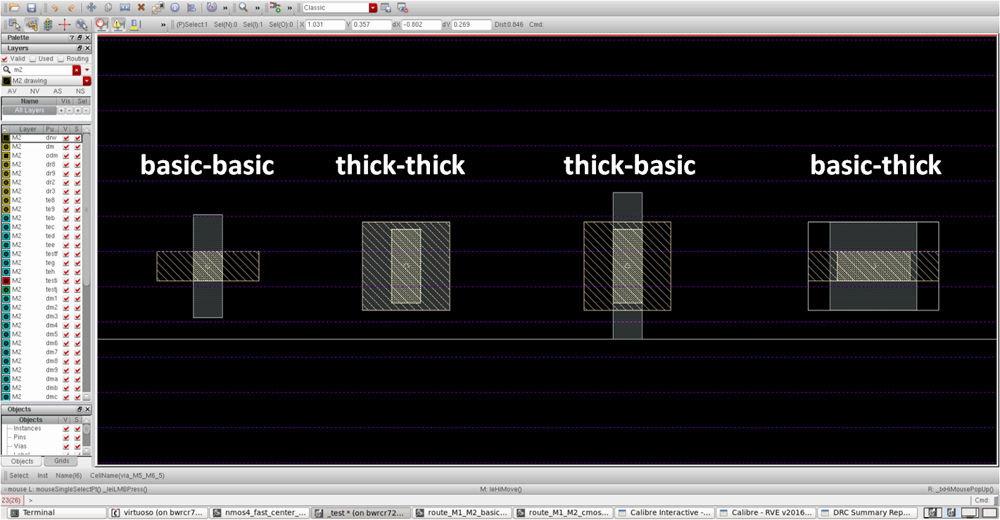
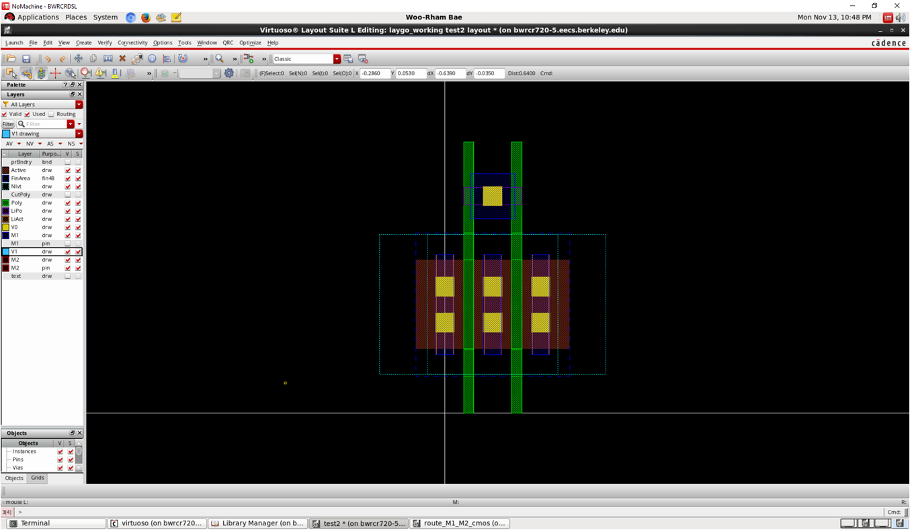
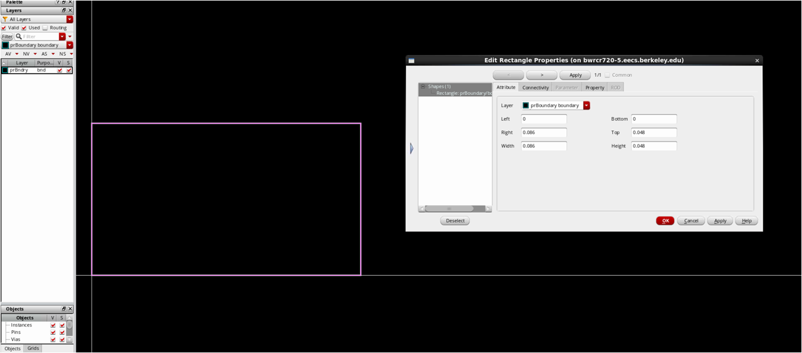
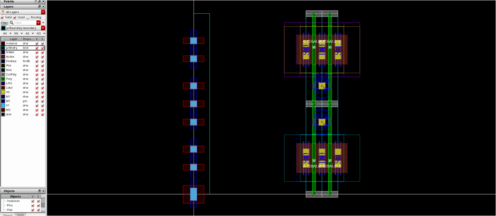

Laygo Template Library Setup Guide¶
This section describes how to construct microtemplates_dense library.
Introduction¶
The guideline provided in this section is not a golden flow; It is based on my (Woorham Bae’s) limited experience, so there must be better solutions. The intend is just to provide some tips that can reduce number of trials and errors I did. Just refer and do not rely!
- For now, Laygo does not support ‘path’ drawing, so please use ‘rectangle’ for all routings
- It is hard to get a perfect templates in your first trial. Don’t be frustrated if you cannot make it.
- Best idea is to refer microtemplates_dense library for other technologies if you can access to. But you need to understand some basics of template library before you replicate.
Let’s start with via(wire) template¶
Draw horizontal/vertical metals with minimum width
- Create => Via => Auto for creating via
 template
templateMake the via object a separate instance
- Edit => Hierarchy => Make cell (ex. via_M1_M2_0)
 template
templateDraw other via templates
- There are various via templates for each layer
template
Transistor template¶
- Nmos4_fast_center_nf2: Most important templates!
 template
template
- Before placing an NMOS, we have to decide width (or number of fin) per finger
- Note that two M2 routing can be placed within S/D area
- Check M2 spacing rule
- With whatever you can do (Options => DRD Options => Enabling DRD Mode is useful)
 template
template
- Check V1 spacing rule as well
- Generally it is wider than M1 spacing
- It is not required, just suggested
 template
template
- Choose number
- Choose a proper number of fins which is available to include two M2 routings/vias and place NMOS
- Turn off poly dummy options: it will be handled later
 template
template
- Adjust coordinate of NMOS
- x: Center of left source should be at x=0
- y: Set intuitively(?). Consider a VSS rail will be placed at the bottom. We may modify it later.
 template
template
- Draw gate contact
- One of the hardest part
- Best way is to refer standard cells
- You can activate poly connect option, but…
template
- Note that it will be placed in array
- If poly connect option gives a horizontally long M1 connection, you’d better to find an alternate way
 template
template
- Draw additional M1 rectangle
- To meet minimum area requirement for M1
- and to avoid ‘+’ shape when a M1_M2 via is placed
- Again, note that it will be placed in array
 template
template
- Draw some layers (technology dependent)
- Draw some other layers such as finfet and CPO if needed, refer related options embedded in pcell

- Attach pin/label on M1
- Draw M1 pin or label layer on existing M1 drawing layers
- On gate and every source/drain
- Choice of pin/label layer depends on technology
- Attach label at the middle of each pin/label layer
- S0, D0, S1, and G0
 template
template
- You can specify the pin area with a rectangle of [M1, pin] and net name with a label of [M1, pin]
- Optionally, you can specify the pin name with a label of [text, drawing]. This is useful if you want to assign multi pins for same nets.
- Set boundary
- Use prboundary layer (or corresponding layer) to define the placement boundary of the cell
- Note that one M2 routing will be placed at the top
 template
template
- It is recommended to set the height of the template as a common multiples of variety of numbers (i.e. 0.48um, 0.6um…)
- To be compatible with all the routing grids, all placement will be done based on prboundary!
 template
template
- Draw pmos4_fast_center_nf2
- It should be very easy if you have drawn nmos4_fast_center_nf2
 template
template
- Draw placement_basic
- There is only a prboundary rectangle
- xy0 = (0,0), xy1 = (poly pitch, one of divisions of height of nmos_fast_center_nf2)
- All x coordinates should be multiples of poly pitch
template
Routing grids¶
Draw route_M1_M2_cmos
- Most important routing grid
- Before drawing that, place nmos and pmos templates
 template
template
- 8 horizontal routings within the CMOS template
- 1 for VDD/VSS rail, 2 for NMOS S/D, 2 for PMOS S/D, 2 for CMOS gate, and 1 for additional gate routing
 template
template
- Draw prboundary
- xy0 = (0,0), xy1 = (poly pitch, height of cmos)
 template
template
- Place M1_M2 vias
- x=0 for all vias, so what you have to do is to set y
- We have already considered that when we drawn nmos, so we can easily find proper y coordinates
template
- Draw M1/M2 wires
- Make sure your routing grid is compatible with CMOS template
- After that, delete nmos/pmos templates
 template
template
- Draw route_M2_M3_cmos
- CMOS-compatible M2_M3 grid is also required
- Just modify M1_M2 vias and M1 rectangle with M2_M3 vias and M3 rectangle from route_M1_M2
 template
template
- Define rest of routing grids
- Draw prboundary: if min. pitch of vertical layer is narrower than PC pitch, x=PC pitch
- else, x=N x PC pitch, where N x PC pitch > min. pitch
 template
template
- When we define y grid, we have to consider spacing rule for horizontal layer and height of MOS template
- So basically, y of prboundary is height of MOS
 template
template
- After that, all the horizontal routing grid within prboundary should be defined as follows
 template
template
- However, if y grid is one of divisions of height of MOS and also meets the spacing rule, a simple template shown below is sufficient
 template
template
Draw rest of transistor templates¶
- nf1, stack, dummy, filler, boundary, and tap
 template
template
- nf1
- nf1_left and nf1_right according to the direction of gate contact
- Consider DRCs for gate connection
 template
template
- 2stack
- Used for NAND_1x, TINV_1x…
- Utilize gate connection technique you found in nf1 template
 template
template
- Dummy
- Use center_nf2 template
- Just connect gate-drain and remove pin on the gate
 template
template
- Space
- For filling space
- Note that RX layer might be included in 4x cell, in order to satisfy RX density rule (not in this layout)
 template
template
- Boundary
- Usually, nmos_fast_boundary == space_1x
- boundary_left/right should resolve design rules regarding poly dummy
 template
template
- Number and pattern of poly dummy depends on technology
- Refer dummy option in pcell
 template
template
- Tap
- For connecting body to VDD/VSS
 template
template
- Refer to psub/nwell contact provided by foundry
- Create => Via => Via Definition
 template
template
- Two M1s in tap cell
- VSS M1-pin to both of them
- TAP0/TAP1 pin using text drawing
 template
template